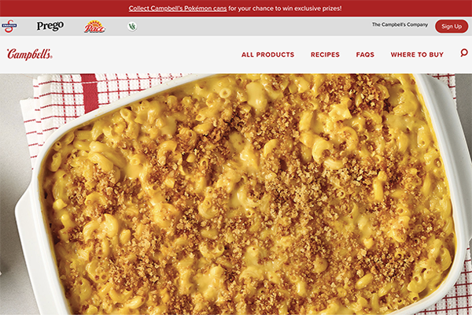
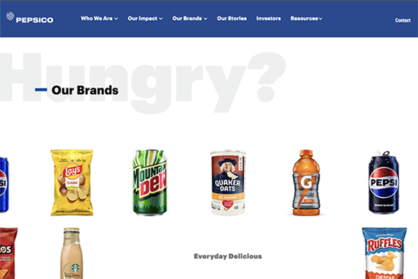
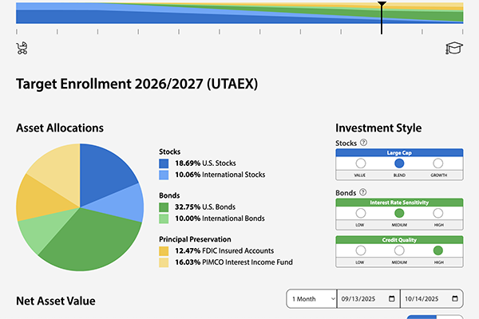

Fresh. Hot. Pixel-Perfect.
You know the feeling when everything just… clicks? When users smile instead of scream; we usually hear silence if successful. It's a great feeling when code runs so smooth it practically purrs. That's not luck, nor is it something that can simply be memorized or taught in school. That's craft/skill that was learned on the fly; a lesson learned through trial and error resulting in experience and wisdom.
For a very long time now I've been obsessed with building and rebuilding (and rebuilding) resilient systems that just work. My motivation is taking complex challenges and turning them into the simplest looking solutions that everyone can be proud of. Along the way, helpful resources are stumbled upon, and hopefully this will help others find some valuable resources too.
* This website is a work in progress and actively being built. Currently, the homepage is the only live page, and its content is actively being refined.
About
Over 12 Years Crafting Custom Web Applications & Digital Content.
When web apps are quick, snappy, and responsive — when they load and flow naturally, like water …when users are grinning instead of frowning… probably even swearing, and when code runs so smooth it practically purrs? It's got to come from somewhere, because unfortunately those skills can't be taught. They're picked up with experience.
With over a 12 years of hands-on experience, I've had the privilege of contributing to a wide range of projects, from large -scale enterprise applications with global reach, to bespoke, websites for local companies. My passion is turning seemingly complex projects into simple, elegant, and maintainable solutions. Don't get me wrong, that doesn't just happen on first attempts. Continuous Integration/Continuous Development and Deployment, user tests, A/B tests, and experiment. Not only on how to identify but what will work the very best.
As a big advocate for fully responsive design, maintainable code, WCAG compliance and accessibility, standards and best coding practices, I thrive in collaborative environments whilst able to continue learning, resulting in me staying on the cutting edge of frontend development.
Featured Portfolio Projects

Campbell's
Developed a responsive ecosystem of multiple websites using WordPress, custom WP themes, a core WP theme that the custom themes use. For styles we used Sass CSS. I was able to incorporate all brands owned by Campbell's (Soup, V8, Swanson, Prego, Pace, and more) into this WordPress multi-site, or like we called it: ecosystem.
View Project →
PepsiCo
Led the Frontend and User Interface engineering for a content management system, focusing on accessibility, responsive design, and SEO.
View Project →
My529 Investment Options
Rendered data into dynamic pie charts and graphs using D3.js library. Then, I linked and imported that data (the graphs the data generated, anyway) to input range sliders to dynamically update the pie chart data in realtime. Best example is a quarter of the way down the page at the provided URL.
View Project →Resources
A (ever-evolving, indefinitely changing) curated collection of useful web apps. Tools, libraries, and resources I've gathered over the years - open source and free (mostly).
These are genuinely valuable resources - packed with great info and insights that have shaped my work. Know of any I should add? I'd love to hear from you.
Tech-Stack Recommendations
Just a few programming languages, libraries, frameworks, and technologies that I highly recommend, if you'd prefer to go at it on your own.